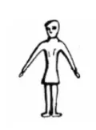
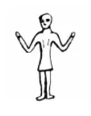

Rune Grimoire
Tiwaz
Modern Relevance
Tiwaz, the warrior rune connected to Týr, is shaped like an arrow. It emboldens confident action and the cutting away of what no longer serves. Success is at hand but may require focus and hard work.
Tree, Element, and Deity
Tree: oak
Element: air
Meaning: sky; justice
Names Across Dialects
| Dialect | Word | Meaning |
|---|---|---|
| Proto-Germanic | tiwaz | The god Týr |
| Gothic | teiws | The god Týr |
| Old English | tir | The god Týr (OE Tiw), glory |
| Old Norse | Týr | The god Týr |
| Icelandic | Týr | The god Týr |
| Norwegian | Ty | The god Týr |
Phonetic value: t
Esoteric interpretation: the sky god
Ideographic interpretation: the vault of the heavens held up by the universal column, and sometimes the spear point
The God Týr and the Threefold Mystery
The T-rune embodies the force ruled by the god Asa-Týr. Týr is the Norse god of law and justice, who governs proceedings at the thing (the Germanic general assembly). The Týr force is one of passive regulation. In northern mythology, it is this god who comes closest to a transcendental quality.
These characteristics are exemplified by the major Týr myth in which the god sacrifices his hand ("active abilities") between the jaws of the Fenris wolf in order to save his fellow Aesir from destruction. Thus, Tiwaz is the rune of self-sacrifice and of kings and great leaders of the people.
The word tiwaz (Old Norse Týr) is the exact cognate to Sanskrit dayus, Greek Zeus, and Latin Jupiter. A threefold mystery is contained in Tiwaz: (1) justice, (2) war, and (3) world-column. Certain aspects of all three concepts are intimately related in the runic cosmology.
Divine Order and the Judgment by Arms
Tiwaz is principally the force of divine order in the multiverse, and especially among humankind. But Týr is also important as a "war god." This is because of the special judicial and spiritual qualities that were imparted to conflict by the ancient Northmen. An Old Norse word sums up this aspect: vapadomr ("judgment by arms": war).
Combat was seen as a struggle between numinous forces in conjunction with physical ones. Both are considered extensions of the same ultimate source. The warrior or army with the most numinous power (developed by right and honorable past action) will be favored by ørlög to win the struggle. Týr rules over the administration of this form of justice, so he is invoked for victory and is therefore an important war god.
The World-Column and the Irminsul
The aspect of the world-column expressed by the T-rune is that of the separator of heaven and earth. This separation creates a phenomenological quality, and is therefore necessary to multiversal manifestation as we know it. This column maintains world order, and protects humanity and the gods from the destruction that would come should the heavens (energy) and earth (matter) collapse into one another.
Tiwaz is represented by the Irminsul of the Saxons. This world-column is the axis mundi and has its heavenly termination in the pole star.
The T-rune is the mystery of spiritual discipline and faith according to divine law. It is the religious instinct in the individual and society. Tiwaz facilitates social integration and regulation according to the spiritual code of the Aesir.
Rune Character
Instills courage and honor. Tyr is the rune of justice. Used for stability and the binding of chaotic energies. Good for defense and revenge workings as it represents justice.
Crystal Pairings
- Bloodstone and Hematite are the stones used with this rune
Keywords
- Justice
- World order
- Victory (according to law)
- Self-sacrifice
- Spiritual discipline
Galdr
tiwaz tiwaz tiwaz
tu ta ti te to
tur tar tir ter tor
ot et it at ut
Stadha
Stand straight, arms slanted down and away from the body in the form of the stave. Palms face the ground, although you may also experiment with palms up.

A bind-rune stadha combining the S-rune and T-rune forms is popularly known as the Sig-Týr rune. It embodies the combined forces of these two powerful symbols. The galdr "Sig-Týr Sig-Týr Sig-Týr" should be used when invoking its force.

Magickal Workings
- Obtaining just victory and success
- Building spiritual will
- Develops the power of positive self-sacrifice
- Develops the "force of faith" in magick and religion
- Defense and revenge workings
- Binding of chaotic energies
Constructive Applications
Instills courage and honor. Used for stability and the binding of chaotic energies. Good for defense and revenge workings as it represents justice.
Stadhagaldr Rites
Success and Victory
Tiwaz invokes the fruit of righteous struggle:
Tyr, Tyr
Fruit of the fight, victory!
See Stadhagaldr (Posture Magick) for the full rite.
Increase in Creative Force
Tiwaz channels the will of speedy shaping toward success:
Tyr, Tyr
Will of speedy shaping
successfully stream through me.
See Stadhagaldr (Posture Magick) for the full rite.